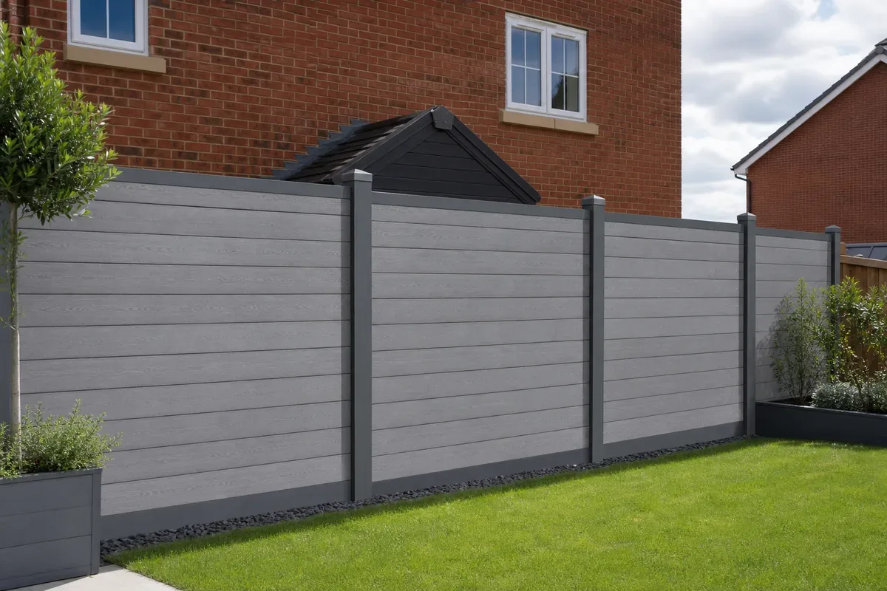

Solihull is within our regular working area across Birmingham and the West Midlands. We install and repair garden fencing, hang timber gates, and carry out commercial perimeter work where specified. Postcodes covered include B91 1, B91 3, B90 3. Property types here — Victorian terraces, inter-war semis, detached housing on clay-heavy suburban slopes, plus small commercial yards — affect access, panel length and post specification.
Postcodes we cover in Solihull
We attend properties across Solihull in postcodes including:
Send your full postcode with quote requests so we confirm coverage before scheduling.
Garden fencing in Solihull
Rear garden boundaries in Solihull commonly use closeboard or feather edge timber, or composite where lower maintenance is preferred. Side access between terraced properties may need a narrower panel width or on-site boarding on sloping plots.
See garden fencing, closeboard and composite fencing for material detail.
Fence repairs in Solihull
Wind damage, rot at gravel board level and leaning posts are common repair enquiries in Solihull. Partial repair is quoted when the post line remains usable; full replacement is quoted when rot is widespread in clay or Mercia mudstone soil.
Nearby areas
We also work in neighbouring districts across Birmingham and West Midlands. Browse the full list on our areas we cover page.